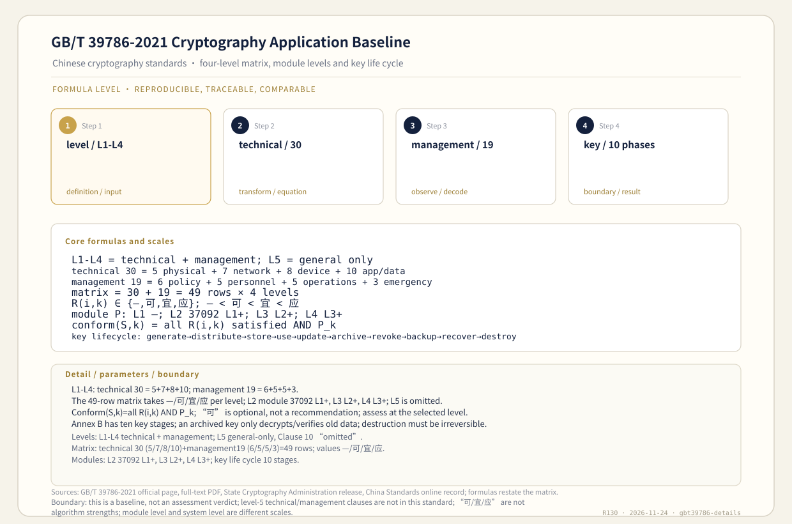
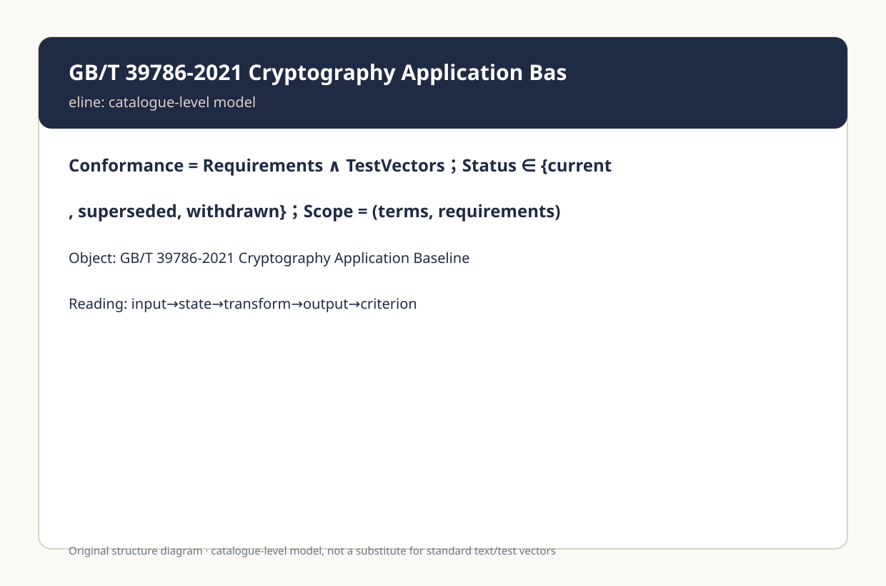

Principles
Standard: Basic Requirements for Cryptography Application in Information Systems (信息系统密码应用基本要求). GB/T 39786-2021 writes information-system cryptography requirements as a four-level matrix. Levels 1 to 4 give both technical and management requirements; level 5 says only “omitted” and gives no technical/management clauses. The four technical layers are physical/environment, network/communication, device/computing, and application/data; the four management dimensions are policy, personnel, construction/operation and emergency response. The row count: technical 30 = physical 5 + network 7 + device 8 + application/data 10; management 19 = policy 6 + personnel 5 + construction/operation 5 + emergency 3; 49 rows total. Each row takes —/可/宜/应 across the four levels, in increasing strength; “可” is optional, “宜” recommended and “应” mandatory. The cryptographic-module level follows the system level: from L2 the module must be GB/T 37092 level 1+, L3 level 2+, L4 level 3+; the L1 product row is “—”. System level, technical/management rows and module level are therefore three different tables and cannot replace one another. The decision formula is Conform(S,k)=∀i R(i,k) satisfied ∧ P_k satisfied. It says whether the system at level k satisfies all applicable rows and the module level simultaneously; it is not a score.

Why it matters
This is a baseline, not an assessment method. It states what levels 1-4 should do, not how an assessor samples, scores or records nonconformity; assessment also depends on the companion assessment standard and cryptographic-product certification.
Why 49 rows rather than 30: the 30 technical rows are specific control points in four layers, while the 19 management rows are organisational controls for policy, personnel, construction/operation and emergency response; looking only at technology misses key management, job roles and response.
Why level 5 is separate: the standard gives only general requirements and says the technical/management clauses are “omitted”; treating level 5 as “level 4 plus a few rows” misreads it.
Why module level is separate: a level-3 system requires a level-2+ module, not “system level 3 = module level 3”; module level is the assurance level of a certified product, system level is the business/data protection level.
Applications
Deployment order: 1) determine the system level from business/data; 2) take the applicable technical and management rows of that level from the 49; 3) map each row to a cryptographic service, product or process; 4) choose the module level for the system level; 5) manage the ten key-life-cycle stages per Annex B; 6) keep evidence of policy, records, assessment and emergency response.
A typical mapping: L1 has minimum technical measures plus basic policy/key rules; L2 adds operating procedures, job responsibility, training and response plans; L3 adds authenticity/confidentiality, policy revision/release/records, assessment and drills; L4 adds integrity/non-repudiation.
The ten key stages are generation, distribution, storage, use, update, archive, revocation, backup, recovery and destruction; an archived key only decrypts/verifies historical data, and destruction must be irreversible.
A shared name may belong to an algorithm, standard, event, person or term; this entry is responsible only for its catalogue binding and does not absorb adjacent records. If versions, regions or institutions define the name differently, the differences stay side by side.

Limits & attacks
“可” does not mean “recommended”: in this baseline it is optional; but once the system level is set, assessment judges the value at that level and does not pass a row merely because it says “可”.
The standard does not replace an assessment verdict, GB/T 37092 product certification or a key-life-cycle audit, and it does not guarantee a particular algorithm or product. Level 5 has no technical/management clauses; do not infer it from L4.
Common errors: reading only the 30 technical rows and missing the 19 management rows; equating module level with system level; writing “应” as “宜”; treating Annex B’s informative advice as mandatory; treating the 49 rows as a score sheet.
History
In 2018 the State Cryptography Administration issued GM/T 0054-2018, “Baseline requirements for information system cryptography application”, as an industry standard; GB/T 39786-2021 revised and elevated it to a national standard, published on 2021-03-09, effective 2021-10-01, 24 pages and current.
The official release notice calls it a foundational standard for commercial cryptography application and security assessment; this card follows the 2021 edition and does not mix in later assessment standards or local rules.
Worked example & verification
Formal model and reproduction steps
[S=\min_i S_i,\quad S_i\in{\text{密钥强度},\text{分组安全},\text{实现安全}}]
Basic Requirements for Cryptography Application in Information Systems: the registered public parameters, key material or randomness, and message are mapped through the stated transformation to an output checked against the registered criterion. The worked example is a structural reproduction, not a new test vector; parameter ranges, standard versions and implementation details remain source-bound.
References
- Wikipedia search entry for 信息系统密码应用基本要求. https://zh.wikipedia.org/w/index.php?search=%E4%BF%A1%E6%81%AF%E7%B3%BB%E7%BB%9F%E5%AF%86%E7%A0%81%E5%BA%94%E7%94%A8%E5%9F%BA%E6%9C%AC%E8%A6%81%E6%B1%82
- Handbook of Applied Cryptography (Menezes, van Oorschot, Vanstone). https://www.cacr.math.uwaterloo.ca/hac/